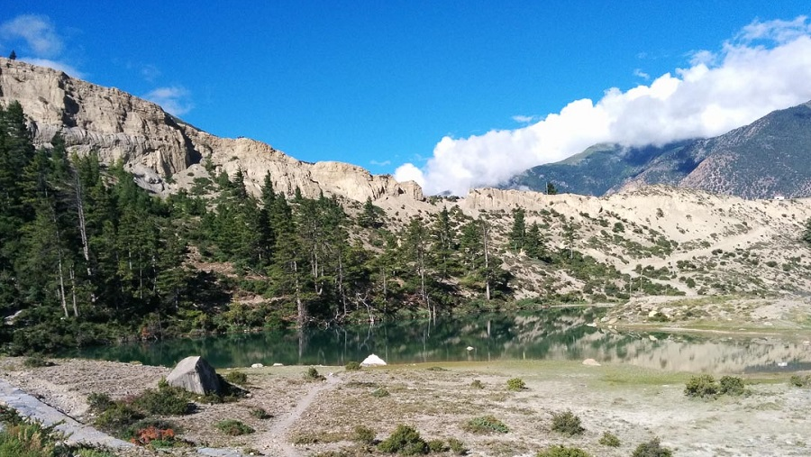

 Mustang, the district in northern Nepal bordering Tibet(China)and it runs along Kali Gandaki River.Mustang is one of the less known trekking destinations of Nepal.It is a mystical and culturally rich region that is excellent for summer trekking.As a matter of fact-speaking about religion and culture,Mustang is considered one of the last places on the planet where one can find unsullied Tibetan Buddhism culture still being practised as it was centuries ago.Moreover,Mustang also has a very rich history;it was once a hidden kingdom that flourished and prospered off the trading route that is controlled. Mustang's terrain is most definitely one of its most majestic aspects. Trekking in Mustang presents a beautiful contrast of the cerulean Annapurna and Dhaulagiri Himalayas against the brown and arid landscape.As the region receives the less rainfall,the erosion of the rock has led to some of the most astonishing formations of naturally occuring adroitness not found anywhere else.It is spritually rich and tranquil adventure that is adorned with many religious,cultural and natural virtues.A historically significant region,Mustang Trekking is a great option for summer treks in Nepal.